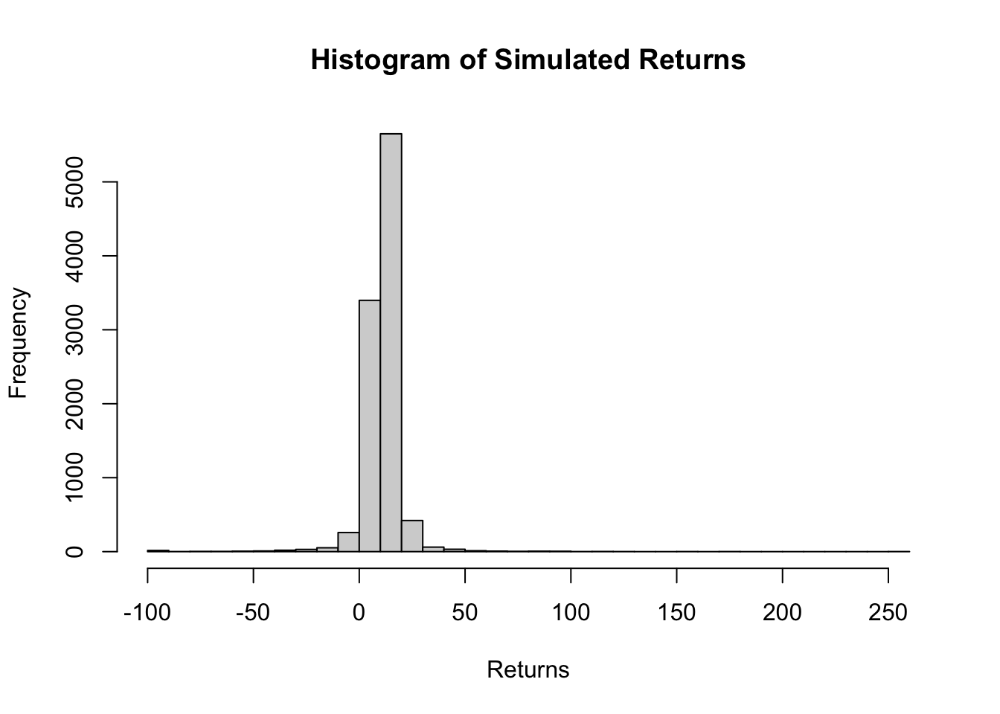

A skewed distribution with fat tails. Tail is truncated on left side at zero
Skewed
A distribution is called left skewed if it has got a long tail on the left side. This means most of the data points are concentrated on the right side. But there are a number of data points that are significantly lower than the bulk of the values.
A distribution is called right skewed if it has got a long tail on the right side. This means most of the data points are concentrated on the left side. But there are a number of data points that are significantly higher than the bulk of the values.
𝜷, the skewness parameter is used to define this.
Skewness and 𝜷
𝜷
Skewness
< 0
Negatively skewed
0
Symmetric
>0
Positively skewed
Fat tail
In a normal distribution, data points on either ends of the distribution are not only symmetric, but they significantly thin out while we move away from the central location. This means that we can ignore these tails on either ends and reach meaningful conclusions with out significant departure from the reality.
But in case of fat tailed distributions, the data points in the tails significantly alter the reality if they are ignored.
⍺, the stability factor determines this tail behaviour. It lies between 0 and 2.
An ⍺ of 2 represents a normal distribution with very thin tails.
As ⍺ moves away from 2 (towards 0), the fatness of the tail increases. That means there are more number of data points in the tail
Levy distribution
It is a kind of distribution where the ⍺ is moved away from 2, meaning, fat tailed and 𝜷 is moving away from 0. That means, it can be either left or right skewed.
Left skewed Levy distribution
We are particularly interested in Levy distribution while analysing returns from a volatile instrument.
Code
# Install and load the necessary package# install.packages("stabledist")library(stabledist)# Parameters for the Lévy distributionalpha <-1.505# Stability parameterbeta <--0.084# Negative skewness parameter (left-skewed)gamma <-0.006433654# Scale parameterdelta <-0.0007449581# Location parameter# Number of simulationsn <-150# Generate random numbers from the Lévy distributionset.seed(123) # For reproducibilitylevy_data <-rstable(n, alpha, beta, gamma, delta)# Plot the histogram of the simulated datahist(levy_data, breaks =50, main ="Left-Skewed Lévy Distribution", xlab ="Data", ylab ="Frequency", col ="blue")
If we analyse the Levy distribution shown in the picture above, we can conclude on following points:
Most of the data are clustered around the central point, 𝛿.
There are no values on the right side of 𝛿 which are way to far away.
There are data points on the left side of 𝛿 which are significantly far away.
Their frequency is not negligible, considering the sample size of just 150.
Gains are limited and stays closer to 𝛿.
Losses are often significantly huge.
Frequency of huge loss is more than huge gains.
But in case of standard volatile instruments, the left side is truncated at -100%
1000 alternate worlds
If we imagine 1000 alternative worlds were this distribution is at play, we can see that each world will be experiencing different returns.
Some will be experiencing repeated huge draw-downs followed by not so huge build-ups.
Others may experience significant draw-downs followed by multiple towering build-ups.
What is common to all these worlds are frequent and extreme draw-downs.
What is the probability of various return rates?
Code
library(stabledist)# Simulation parametersset.seed(233)alpha <-1.505# Stability parameterbeta <--0.084# Negative skewness parameter (left-skewed)gamma <-0.006433654# Scale parameterdelta <-0.0007449581# Location parametern <-10000# Number of simulations# Generate samples from a stable distributionlevy_samples <-rstable(n, alpha, beta, gamma, delta) # Truncate returns at -100%truncated_samples <-pmax(levy_samples, -100)# Adjust mean and standard deviation (Historical)desired_mean <-10.8desired_sd <-21# Calculate current mean and standard deviationcurrent_mean <-mean(truncated_samples)current_sd <-sd(truncated_samples)# Apply linear transformation to adjust mean and standard deviationadjusted_samples <- (truncated_samples - current_mean) * (desired_sd / current_sd) + desired_mean# Ensure minimum value is -100 after truncationadjusted_samples <-pmax(adjusted_samples, -100)# Example: Simulate future returns over a periodfuture_returns <- adjusted_samples# Basic summary statisticscat("Summary Statistics:\n")
Summary Statistics:
Code
print(summary(future_returns))
Min. 1st Qu. Median Mean 3rd Qu. Max.
-100.000 8.271 11.365 11.146 14.424 252.402
Code
# Basic histogramhist(future_returns, breaks =50, main ="Histogram of Simulated Returns", xlab ="Returns")

Code
# Probability calculationsp_return_greater_15 <-mean(future_returns >15)cat(paste("P(Return > 15) =", p_return_greater_15, "\n"))
The simulated returns exhibit the following characteristics:
Minimum: The lowest return observed after truncation is -100, indicating that no return falls below this threshold due to truncation.
1st Quartile: 25% of the returns fall below this value.
Median: 50% of the returns fall below this value, indicating the central tendency of the distribution.
Mean: The average return is approximately 11.146, representing the central tendency of the distribution.
3rd Quartile: 75% of the returns fall below this value.
Maximum: The highest return observed is 252.402, indicating that no return exceeds this threshold.
The probability calculations reveal the likelihood of observing returns within specific ranges:
There is a 21.3% chance that the return will exceed 15.
There is a 1.34% chance that the return will exceed 30.
There is a 67.92% chance that the return will fall between 5 and 15.
There is a 19.96% chance that the return will fall between 15 and 30.
There is an 8.49% chance that the return will fall between -5 and 5.
There is a 1.26% chance that the return will fall between -15 and -5.
There is a 1.03% chance that the return will be less than -15.
There is a 0.57% chance that the return will be less than -30.
There is a 0.23% chance that the return will be less than -60.
Value at Risk (VaR) and Conditional VaR
Traditionally, mean and the variance are used as metrics to select an appropriate portfolio. One down side of mean-variance-risk assessment is that it assumes a symmetric distribution and secondly proposes to truncate variance on either side to reduce risk.
In fact variance is beneficial for buildup of the right side of the distribution and adds convexity to the benefit if we can mitigate the risk of large draw-downs on the left side.
Two metrics that specifically looks for tail risk are Value at Risk (VaR) and Conditional Value at Risk (CVaR)
VaR
This measures the maximum loss over a given time period with a certain confidence level. For example, VaR at a 95% confidence level is the loss that will not be exceeded with 95% probability.
CVaR
This measures the expected loss given that the loss has exceeded the VaR threshold. It’s also known as Expected Shortfall.
CVaR is the most useful measure to foresee the shortfall in the capital, if the tail risk remains unattended.
Code
# Confidence levelconfidence_level <-0.95# Calculate VaR (95% confidence level)VaR_95 <-quantile(future_returns, 1- confidence_level)# Calculate CVaR (Expected Shortfall)CVaR_95 <-mean(future_returns[future_returns <= VaR_95])# Calculate maximum CVaR (worst loss within the VaR threshold)max_CVaR_95 <-min(future_returns[future_returns <= VaR_95])# Adjust for the investment amount (assuming VaR and CVaR are in percentage terms)investment <-100VaR_95_rupees <- investment * (VaR_95 /100)CVaR_95_rupees <- investment * (CVaR_95 /100)max_CVaR_95_rupees <- investment * (max_CVaR_95 /100)# Print results rounded to 2 decimal placescat("VaR (95% confidence level) =", round(VaR_95_rupees, 2), "rupees\n")
In this scenario, we can see that VaR and CVaR are reasonably managable. We can say with in 95 % of scenarios, loss well not exeed ₹1.5 and in 5% scenarios where it exeeds ₹1.5, average loss will be aroud ₹11.61, for every ₹100 invested.
Important catch is that in those 5% rare scenarios, the maximum CVaR can reach upto ₹100, that is the entire corpus can be washed out.
As Bernoulli would insist
Larger the part of fortune greater the imprudence of the gambler in a game of chance
A man who risks his entire fortune acts like a simpleton, however great may be the possible gain
Either take insurance or keep a significant portion away from the game of chance
It is advisable to divide the fortune which are exposed to chance in to several portions rather than to risk them all together